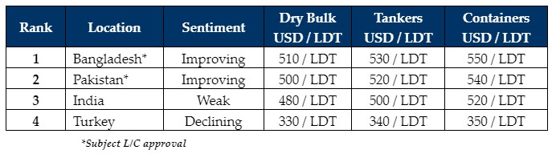

inWeekly Demolition Reports04/03/2024

As freight markets push further on, global ship recycling markets remain deprived of tonnage, makingit an increasingly suffocating environment for ship recyclers to operate in. In countries like Bangladesh & Pakistan that rely heavily on imported ship’s steel, not only for domestic / large-scale infrastructure projects, but also for its comparatively ‘healthier’ and ‘rust-free’ condition than other forms of imported scrap metal / steel (HMS 1, HMS 2, shredded steel, etc.), which is in an exponentially worse off condition, ship recycling remains a win-win / net-positive transaction for all parties involved as a comparatively higher USD/Ton is paid for the steel coming out of the world’s end-of-life ships that would otherwise be of no further use. The easier availability of such materials (compared to local mining, logistics, or even imports) for national infrastructure projects & that too at ‘scrap’ related levels, remains a blessing for such nations.
On the supply side, the dry bulk / container sectors continue to surge in rates since the start of the year, resulting in owners of even 25-30-year-old vessels finding a decent route to keep their units employed in! Moreover, the ongoing & unexpected surge in freight rates has not only lured the tanker sectors in (leaving it positioned at historically strong levels), but it has also taken the one off HKC / specialist units that were drip-feeding some much-needed life into an emaciated Alang back in January, away from the bidding tables resulting in a seriously famished state of affairs at all of the major recycling waterfronts. Tonnage shortage hasn’t spared the Turkish market either, where the Lira & local fundamentals conspired to finally break the backbone that held vessel prices firmly up this far, resulting in the industry seeing Aliaga Buyers roll back levels by about USD 10/MT this week, the much-anticipated first in a long time.
Finally, ongoing geopolitical hurdles remain fundamental to this most recent & sustained surge in charter rates, and the world has clearly been thrust into unchartered territory this year, given all of the ongoing disruptions affecting global trade. This also begs the question as to whether China is even facing an economic downturn at present, so bullish have the trading markets been of late. Nevertheless, recycling locations are recovering from the loss of about USD 100/LDT in value over the course of 2023 as Pakistan & Bangladeshi Recyclers battled L/C & finance restrictions on all of their vessels (until only 2 months ago). Moreover, with political disruptions and elections nearly settled across all sub-continent ship recycling markets, and India’s elections now being reportedly rescheduled until May, nervy Alang Recyclers are the only ones reticent to offer firm, at least until the (expected) outcome of the elections are confirmed.
For week 9 of 2024, GMS demo rankings / pricing for the week are as below.

📄 Download PDF: Ship-recycling-market-insight-week-09-2024-Still_Losing_Supply.pdfSource: GMS,Inc. ,https://www.gmsinc.net/gms_new/index.php/web